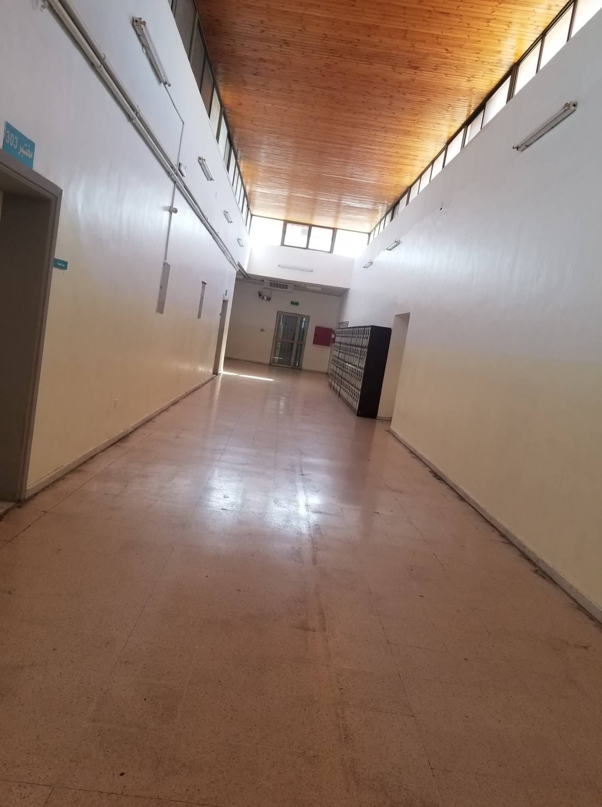

This shortcut stands for Business Information Technology which is a combination of information technology (IT) and business management. A field like business information technology is interdisciplinary in nature, meaning that it combines several areas of study and expertise into one.
